The American Bahá’í · Studies
Story invitation ideas
Story invitations Popups
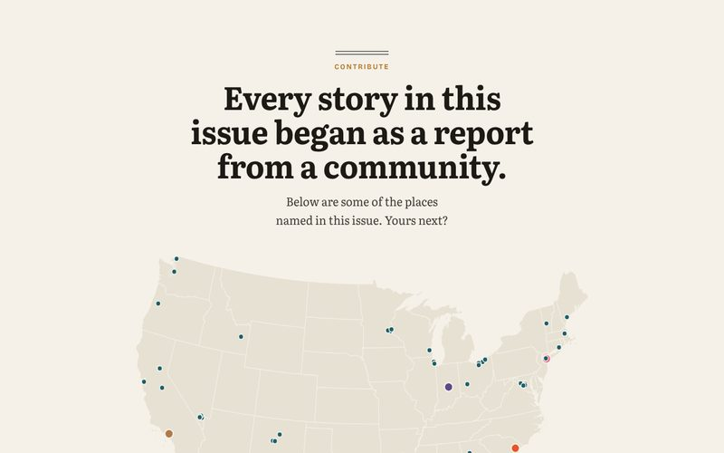
AThe mapEvery place named in the issue on one map. Type your town and the form opens beside it.
Everyone · Nov 12, 2026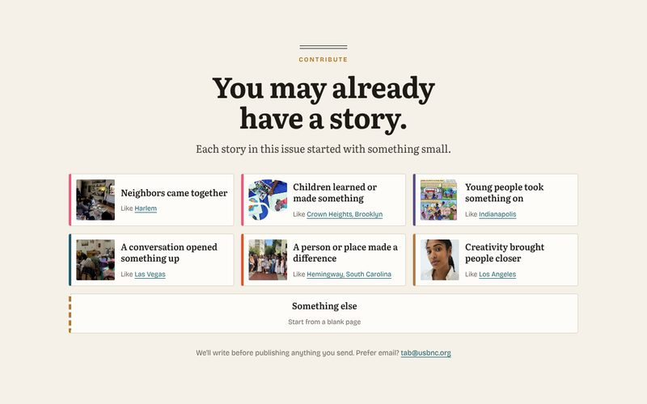
BStory startersSix broad openings, each tied to a story in this issue. For readers who doubt they have a story.
Non-writers · Nov 12, 2026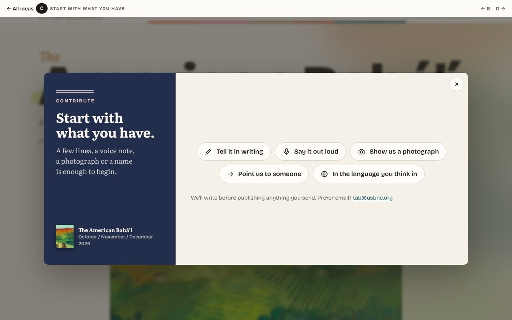
CStart with what you haveFive ways in, named the way people talk: writing, speaking, a photograph, a name, your own language.
Everyone · Any language · Non-writers · Nov 12, 2026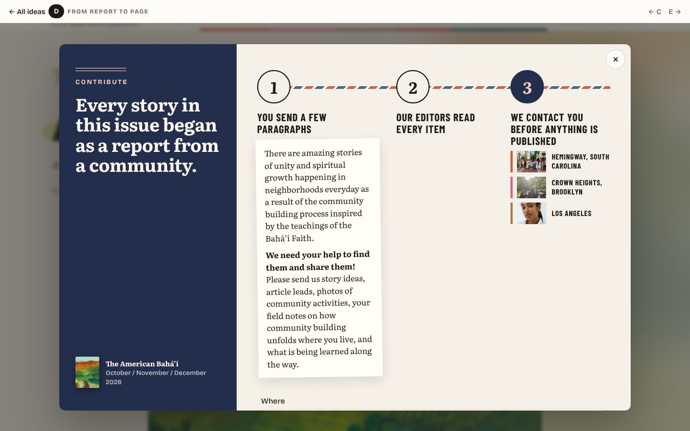
DFrom report to pageThe printed call, word for word, as step one of three: you send, our editors read every item, and we get in touch and work with you before anything you share is used.
Everyone · Nov 12, 2026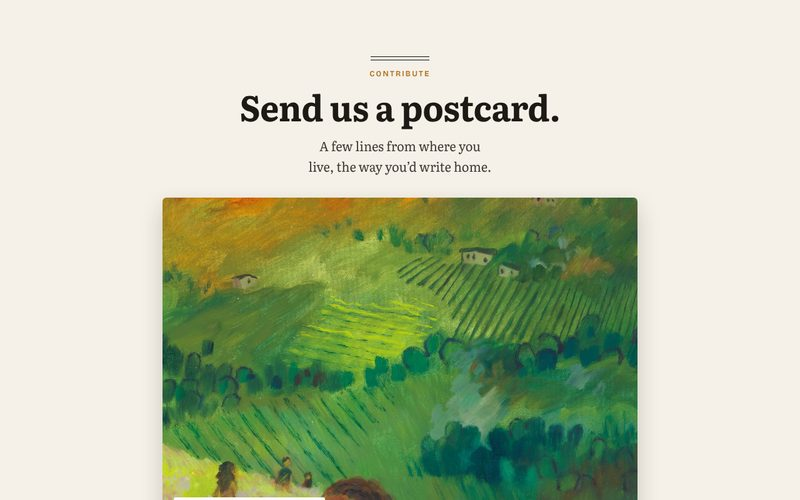
EA postcard homeThe cover painting on the front; your message and our address on the back. Turn it over to write.
Everyone · Nov 12, 2026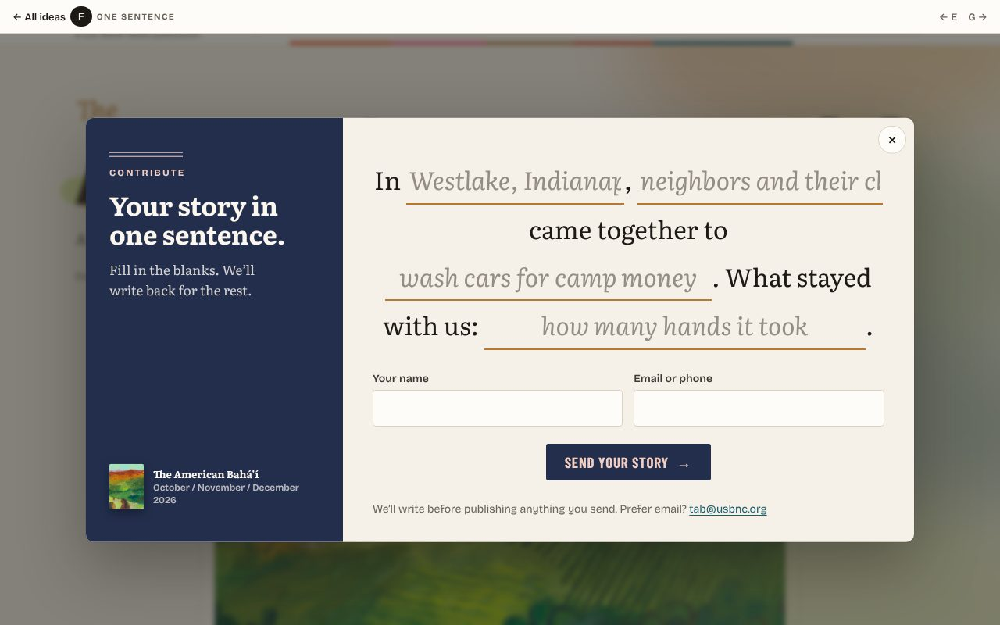
FOne sentenceThe story as one sentence with blanks. Fill four gaps and it’s a report.
Non-writers · Young people · Nov 12, 2026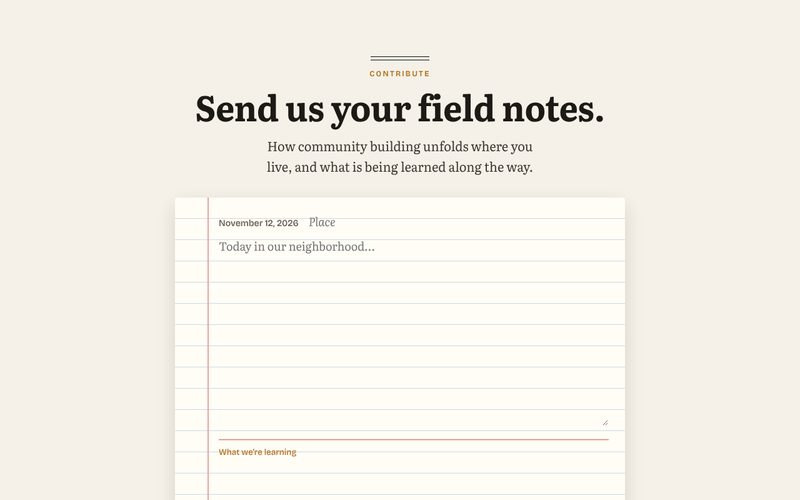
GField notesA dated notebook page. The print call asks for field notes; this gives them a place.
Everyone · Nov 12, 2026
RFC / Open Calls Landing pages for a recurring call for content
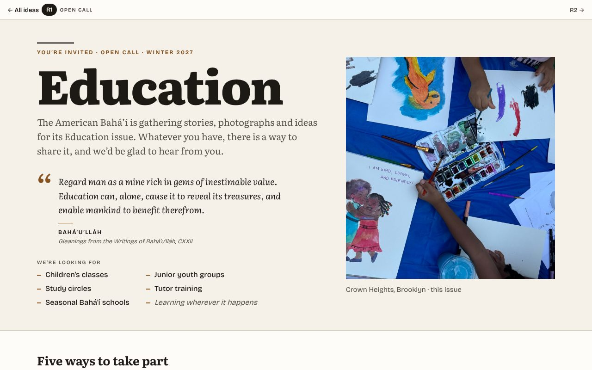
R1Open callOne page per issue: the theme, five ways in, where things go, and what’s coming.
RFC / Open calls · Nov 12, 2026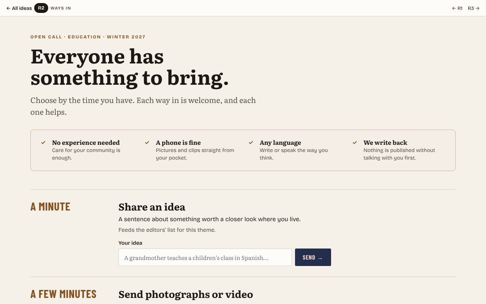
R2Ways inOrganized by the time a visitor has, from a minute to ongoing, each with its own small form.
RFC / Open calls · Nov 12, 2026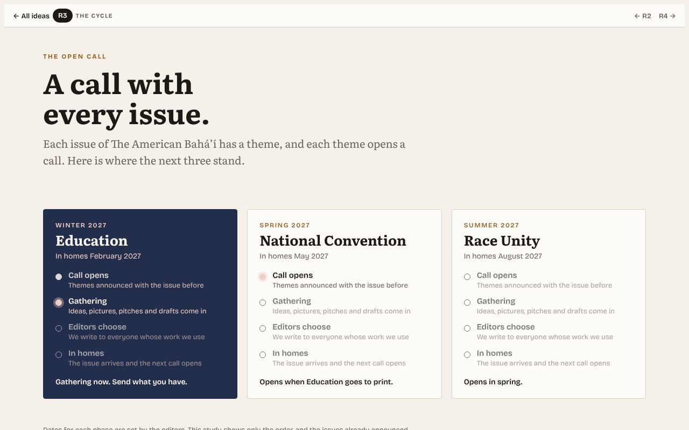
R3The cycleThe call as a rhythm: every issue opens one, and each card shows its phase.
RFC / Open calls · Nov 12, 2026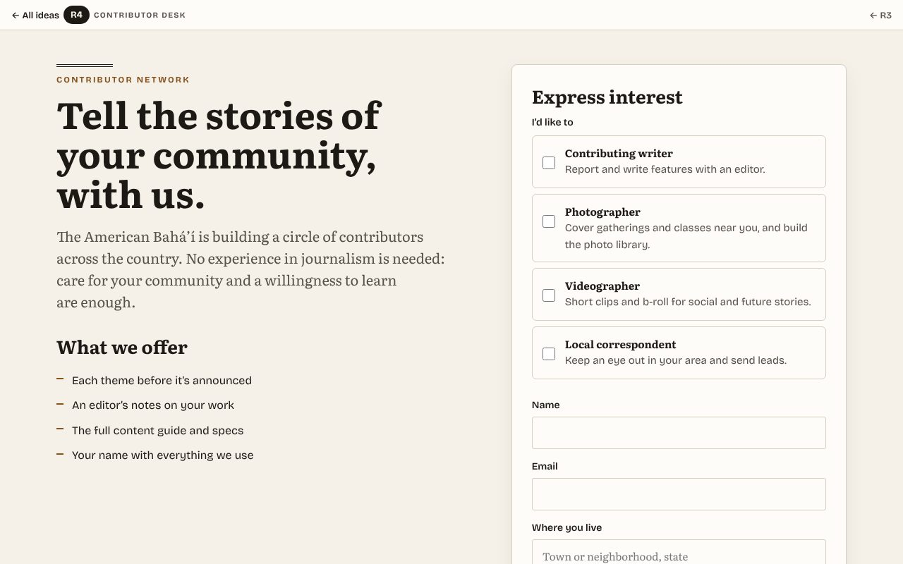
R4Contributor deskAn invitation to join the network of writers, photographers, videographers and correspondents.
RFC / Open calls · Nov 12, 2026
Animations Motion for the calls to action: two live, two proposed
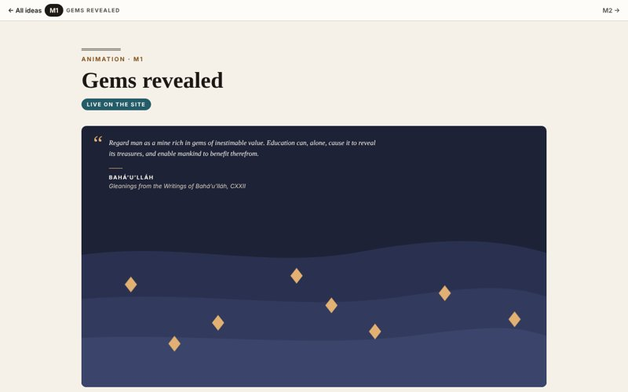
M1Gems revealedLive on the site. Gems surface from layers of earth while the passage is read. The call’s own text becomes the image.
Animations · Nov 12, 2026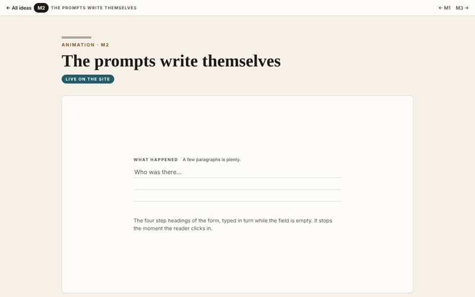
M2The prompts write themselvesLive on the site. While the field is empty, the form’s four step headings type in turn, so the blank box always suggests a first line.
Animations · Nov 12, 2026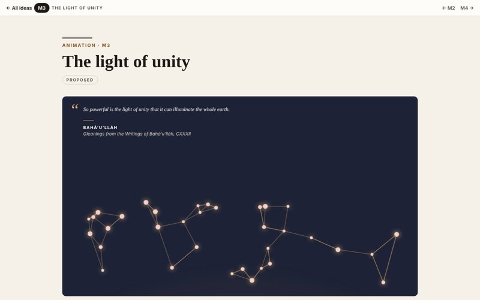
M3The light of unityProposed. A dawn rises from below; scattered points brighten as the light reaches them, then draw toward their neighbors.
Animations · Nov 12, 2026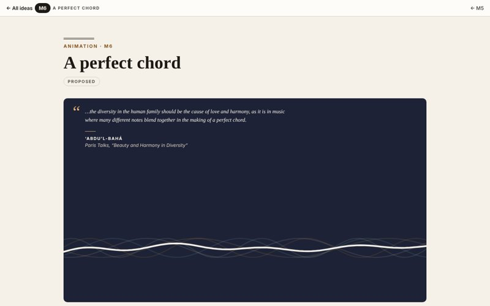
M4A perfect chordProposed. Five waves in five colors move toward one another and resolve into a single chord.
Animations · Nov 12, 2026